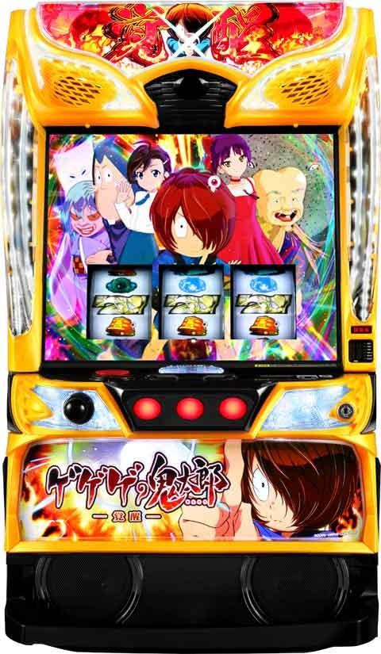
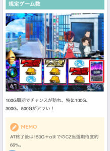
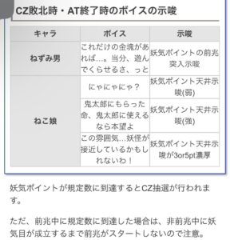
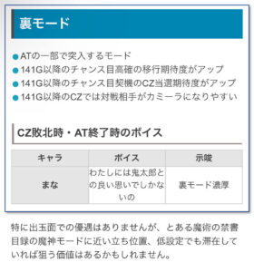

Lゲゲゲの鬼太郎覚醒

【天井情報】
1200G+α AT当選
リセット時はゲーム数が0-150G加算される。また、AT突入時ねこ娘チャンスに同時当選の可能性アップ。
【リセット判別】
不明
【有利区間について】
不明
狙い目
【リセット狙い】
290Gから
【AT間天井狙い】
500Gから
朝イチ天井(1150G以上)後 180Gから
※朝イチ天井後の朝ニのみ
差枚別
+1500枚以上 390Gから
一撃1500枚以上後 400Gから
【人魂カウンタ狙い】
不明
規定ポイント到達時の37.2%でCZ突入。
【100-150Gゾーン狙い】
朝イチ以外 50Gから
朝イチ ゾーン弱い
一撃1500枚以上後
積極派 10Gから
慎重派 30Gから
差枚+1500枚以上後
積極派 10Gから
慎重派 30Gから
ミミズっぽい台 70Gから
【300-350Gゾーン狙い】
ミミズモードがありそう？
差枚が大きく凹んでる時や、200-400Gまでに複数回当選が続いている時にミミズモードの可能性が上がる。
ミミズモードの特徴
・ATの獲得枚数が1000枚以下
・当選履歴が200-400G以内で連続当選(連続するほどミミズの可能性アップ)
・100Gゾーンが弱い
・差枚凹んでる方がミミズになりやすい傾向？凹むとミミズに行きやすいのか、ミミズだから凹んでるのか不明
2or3連続後 200Gから300-350ゾーンまで
4連続以上後
積極派 80GからAT当選まで
慎重派 160Gから300-350ゾーンまで
※4連続以上後は400-500Gゾーンも強くなる？
【CZ敗北時、AT終了時のボイス】
ねこ娘の示唆は強以上でもあまり強くない？100ゾーンも含めて打つ打たないは個人判断で。
裏モード示唆は打った方が良さそう。
ゲゲゲの鬼太郎覚醒
【有利区間切れ狙い】
不明
やめ時
現状即やめ。
前兆中に妖気ポイントの規定数に到達した場合は、非前兆中に妖気目が成立するまで前兆がスタートしない。
その他
規定ゲーム数

CZ敗北時・AT終了時のボイス示唆

裏モード

参考元
基本情報
- メーカー: JFJ
- 機械割: 97.9% 〜 114.9%
- 導入開始日: 2024年08月05日（月）
- ゲーム性概要: 通常時は規定ゲーム数消化・レア役・妖気ポイント（妖気目で獲得）を契機にCZやAT当選を目指すゲーム性。 初当りメインルートのCZ「ゲゲゲBATTLE」は前半9Gで技レベルを上げ、後半のバトル勝利でAT濃厚となる。 AT「ゲゲゲRUSH」は純増約5枚/G、1セット25G＋αのST型で、3段階のATレベルによってSTループ期待度が変化。ねこ娘CHANCEやゲゲゲBONUS当選で25Gが再セットされる。CZ・ボーナス消化中はATレベルアップ抽選がおこなわれ、最大のレベル3はトータルループ期待度約80%と強力だ。 ※80%はAT中ゲゲゲBONUS当せん率と覚醒BATTLE成功率の合算値


打ち方
打ち方・小役
打ち方（小役狙い）
「基本は全リールフリー打ちでOK」

取りこぼしはないので、左1stのフリー打ちでOKだ。
「レア役の停止形」

中右リールのどちらかに鬼太郎停止でチャンス目、両方に鬼太郎停止で強チャンス目となる（リプレイ・ベル揃い時を除く）。
［妖気目と（強）チャンス目の複合もアリ！］

変則押しはNG

通常時、押し順ナビなし時は左リール第1停止での消化を推奨する。
AT中の打ち方

基本的には押し順ナビ通りに打てばOK。ナビなし時は通常時と同じく、左1stのフリー打ちで消化しよう。
「中段鬼太郎停止からの小役ハズレでチャンス目」


押し順チャンス目時は、中or右リール中段に鬼太郎が停止。ここからベルやリプレイを否定すれば押し順チャンス目となる。
「ボーナス中・リール白フラッシュ発生時」


左リールに赤7を狙う。ミスしてしまっても、中 or 右リールのいずれかに赤7を狙えばOKだ。
リーチ目／出目法則
左リール赤7狙い時の出目法則
「赤7上段停止時」

成立役…ハズレorベル（1枚・3枚）orリプレイor（強）チャンス目
「赤7中段停止時」

成立役…強チャンス目
「ベル上段停止時」

成立役…13枚ベルorリプレイor（強）チャンス目
「リプレイ上段停止時」

成立役…妖気目or（強）チャンス目
解析情報通常時
小役関連
レア役のおもな抽選内容
| 役 | 内容 |
|---|---|
| 妖気目 | チャンス目高確移行抽選、妖気ポイント加算 |
| チャンス目 | CZ当選のメイン契機 |
| 強チャンス目 | CZ当選の大チャンス |
［設定差ナシ］小役確率
| 役 | 確率 |
|---|---|
| 1枚ベル | 1/15.46 |
| リプレイ | 1/12.32 |
| 妖気目 | 1/20.56 |
| チャンス目 | 1/185.13 |
| 強チャンス目 | 1/1040.25 |
| 妖気目＋チャンス目 | 1/212.78 |
| 妖気目＋強チャンス目 | 1/1337.47 |
| 妖気目合算 | 1/18.49 |
| チャンス目合算 | 1/99.00 |
| 強チャンス目合算 | 1/585.14 |
| （強）チャンス目合算 | 1/84.67 |
| 妖気目＋（強）チャンス目合算 | 1/16.54 |
［設定差アリ］小役確率
共通13枚ベルは通常時は左1stの13枚、AT中はナビなしの13枚。共通3枚ベルは左1stで中段に揃う3枚ベルだ。
（強）チャンス目のCZ当選率
（強）チャンス目成立時は、フェイクを含む前兆移行濃厚。前兆にはショートとロングの2種類があり、ショートは数ゲームざわついて終了。ロングは数ゲームのざわつきのあと、百鬼夜行ゾーンへ移行する。
強チャンス目
※期待度は前兆中の書き換えを含む
［チャンス目］前兆種別振り分け 100G目のゾーン
| 設定 | フェイク前兆ロング | 本前兆ロング |
|---|---|---|
| 1 | 37.5% | 62.5% |
| 2 | 37.5% | 62.5% |
| 3 | 37.5% | 62.5% |
| 4 | 37.5% | 62.5% |
| 5 | 37.5% | 62.5% |
| 6 | 37.5% | 62.5% |
［強チャンス目］前兆種別振り分け
| 前兆種別 | 振り分け |
|---|---|
| フェイク前兆ロング | 31.6% |
| 本前兆ロング | 68.4% |
内部状態関連
内部状態概要
通常時の内部状態は3種類で、チャンス目成立時のCZ当選期待度が変化。妖気目はチャンス目高確移行抽選だけでなく、1〜30ptの妖気ポイントも加算される。
内部状態概要
| 項目 | 内容 |
|---|---|
| チャンス目時のCZ期待度 | 通常＜チャンス目高確＜百鬼夜行CHANCE |
| チャンス目高確 移行契機 | 妖気目、共通13枚ベル |
| 百鬼夜行CHANCE 移行契機 | 100G消化ごとの抽選 |
チャンス目高確
妖気目と共通13枚ベル成立時にチャンス目高確への移行を抽選。移行後はハズレ目成立時に転落が抽選される。
チャンス目高確移行率
| 役 | 移行率 |
|---|---|
| 妖気目 | 18.8% |
| 共通13枚ベル | 25.0% |
チャンス目高確中の各種数値
| 項目 | 抽選値 |
|---|---|
| 滞在中のチャンス目出現期待度 | 60.2% |
| ハズレ時の転落率 | 33.2% |
| 平均滞在ゲーム数 | 17.3G |
チャンス目高確の継続ゲーム数振り分け
| ゲーム数 | 振り分け |
|---|---|
| 13G | 95.3% |
| 20G | 4.3% |
| 30G | 0.4% |
百鬼夜行CHANCE
ゲーム数カウンタが100の倍数に到達するごとに、百鬼夜行CHANCE移行を抽選。百鬼夜行CHANCE滞在中は 押し順チャンス目確率がアップ する。 百鬼夜行CHANCEは（強）チャンス目成立 or 32G消化で終了し、終了後は前兆を経由して百鬼夜行ゾーンへ突入する。
百鬼夜行CHANCE移行期待度
| ゲーム数 | 期待度 |
|---|---|
| 100G | ◎ |
| 200G | ▲ |
| 300G | ◯ |
| 400G | ▲ |
| 500G | ◯ |
| 600G | ▲ |
| 700G | △ |
| 800G | ■ |
| 900G | ■ |
| 1000G | ■ |
| 1100G | ■ |
※期待度…■＜▲＜△＜◯＜◎
百鬼夜行CHANCE中のチャンス目確率
| 役 | 確率 |
|---|---|
| チャンス目 | 1/99.0 |
| 強チャンス目 | 1/585.1 |
| 押し順チャンス目 | 1/24.8 |
| チャンス目合算 | 1/19.2 |
モード
裏モード
AT終了時の一部で移行する特殊なモードで、滞在中はAT初当り確率（CZ確率やCZ成功期待度）がアップする。
裏モード性能
| 項目 | 内容 |
|---|---|
| 突入契機 | AT終了時の一部 |
| 終了契機 | AT当選時の一部 |
| 恩恵 | AT初当り確率（CZ確率やCZ成功期待度）がアップ |
| 恩恵 | 141G以降のチャンス目成立時のCZ期待度アップ |
| 恩恵 | 141G以降のチャンス目高確移行率アップ |
| 恩恵 | 141G以降のCZでカミーラの出現率アップ |
規定ゲーム数
規定ゲーム数消化時の抽選

100G周期でCZやAT当選のチャンスが到来。100、300、500Gはとくにチャンスとなっている。 AT終了後は150G＋αまでのCZ当選期待度が約66%と高い。
妖気ポイント＆人魂カウンタ
妖気ポイント＆人魂カウンタ概要

妖気目成立時に妖気ポイントを獲得。ポイントはリール左の人魂カウンタに蓄積されていき、規定ポイントに到達するとCZ突入抽選がおこなわれる。
妖気ポイント
設定変更時、AT終了時、妖気ポイント天井到達時に妖気ポイントの天井を抽選。妖気目成立時に1〜30ptの妖気ポイントを加算していき、最大30pt獲得（天井に到達）するとCZが抽選される。
妖気ポイントの天井回数
| 妖気ポイント | AT終了後 | 妖気ポイント 天井到達後 | 設定変更後 |
|---|---|---|---|
| 3pt | 低 | 低 | 低 |
| 5pt | 低 | 中 | 低 |
| 7pt | 低 | 低 | 低 |
| 10pt | 低 | 中 | 低 |
| 15pt | 高 | 低 | 中 |
| 20pt | 中 | 高 | 中 |
| 25pt | 低 | 中 | 中 |
| 30pt | 中 | 中 | 中 |
妖気ポイントの天井関連
| 項目 | 抽選値 |
|---|---|
| 天井までの平均妖気目成立回数 | 約17回 |
| AT終了時 | 15pt以内の天井到達期待度約57% |
| 妖気ポイント天井到達後 | 10pt以内の天井到達期待度約37% |
妖気ポイント天井到達時のCZ期待度
| 項目 | 抽選値 |
|---|---|
| 百鬼夜行ゾーン移行率 | 100% |
| 百鬼夜行ゾーン終了までのトータルCZ期待度 | 37.2% |
前兆中に再び天井に到達した場合は、一旦保留され、次回の妖気目成立後に前兆がスタートする。前兆を保留している間に再び天井に到達した場合、CZ以上当選濃厚だ。
前兆保留中の天井到達時・本前兆種別振り分け
| 前兆種別 | 振り分け |
|---|---|
| CZ本前兆ロング | 96.9% |
| AT本前兆ロング | 3.1% |
AT終了時・妖気ポイント天井回数振り分け
| ポイント | 振り分け |
|---|---|
| 3pt | 0.4% |
| 5pt | 0.4% |
| 7pt | 0.4% |
| 10pt | 2.3% |
| 15pt | 53.9% |
| 20pt | 21.5% |
| 25pt | 7.0% |
| 30pt | 14.1% |
AT終了後 妖気ポイント契機の妖怪接近ステージ移行ゲーム数の分布
| ゲーム数 | 割合 |
|---|---|
| 1～50G | 2.5% |
| 51～100G | 5.8% |
| 101～150G | 5.1% |
| 151～200G | 12.2% |
| 201～250G | 16.9% |
| 251～300G | 18.1% |
| 301～350G | 13.0% |
| 351～400G | 10.1% |
| 401～450G | 6.1% |
| 451～500G | 3.9% |
| 501G～ | 6.3% |
AT終了後は8割以上が20pt以下となるため、早いゲーム数での妖怪接近ステージ移行に期待できる。
ゲゲゲBATTLE（CZ）
ゲゲゲBATTLE概要

AT当選のメインルートとなるチャンスゾーン。前半は小役入賞で技レベルアップを抽選していて、後半のバトルでは最終的な技レベルに応じて勝利抽選がおこなわれる。 技レベル不問で最終ゲームで小役が入賞すれば勝利濃厚だ。
ゲゲゲBATTLE性能
| 項目 | 内容 |
|---|---|
| 突入契機 | 規定ゲーム数消化、レア役での抽選、 妖気ポイントでの抽選 |
| 継続ゲーム数 | 10G |
| 消化中の抽選 | 小役入賞で技レベルをあげて、バトル勝利でAT |
| 消化中の抽選 | 最終ゲームでの小役入賞時はAT濃厚 |
| AT期待度 | 約51% |
| 小役成立確率 | 1/4.36 |
敵選択1G＋バトル8Gで技レベルを上げて、ジャッジメント1GでATの当否を告知する。
ゲゲゲBATTLE確率
| 設定 | 確率 |
|---|---|
| 1 | 1/222.3 |
| 2 | 1/219.8 |
| 3 | 1/217.0 |
| 4 | 1/206.8 |
| 5 | 1/197.2 |
| 6 | 1/191.6 |
「対戦相手」


対戦相手は伊吹丸＜カミーラの2人。カミーラは技レベルが3から始まるので勝利期待度が高い。
「技レベル」

レベル5の指鉄砲まで昇格すれば激アツ！
CZの対戦相手振り分け＆勝利期待度
| 設定 | 伊吹丸 | カミーラ |
|---|---|---|
| 1 | 90.6% | 9.4% |
| 2 | 90.2% | 9.8% |
| 3 | 89.8% | 10.2% |
| 4 | 88.7% | 11.3% |
| 5 | 88.3% | 11.7% |
| 6 | 87.9% | 12.1% |
| 勝利期待度 | 約47% | 約86% |
技レベルアップ率
| レベル | ベル リプレイ | 妖気目 | チャンス目 | 妖気目＋ チャンス目 |
|---|---|---|---|---|
| アップなし | 30.1% | ー | ー | ー |
| 1アップ | 69.9% | 99.6% | ー | ー |
| 2アップ | ー | ー | 98.4% | ー |
| 3アップ | ー | ー | ー | 98.4% |
| 4アップ | ー | 0.4% | 1.6% | 1.6% |
※強チャンス目、妖気目＋強チャンス目は4アップ＝勝利濃厚
小役非入賞時・技レベルごとの勝利当選率
| 技レベル | 当選率 |
|---|---|
| 1 | 1.6% |
| 2 | 5.5% |
| 3 | 20.3% |
| 4 | 84.8% |
| 5 | 勝利濃厚 |
技レベルごとのトータル勝利期待度
| 技レベル | 期待度 |
|---|---|
| 1 | 24.2% |
| 2 | 27.2% |
| 3 | 38.6% |
| 4 | 88.3% |
| 5 | 勝利濃厚 |
小役入賞時は技レベル不問で勝利濃厚。小役非入賞時は技レベルに応じて勝利抽選がおこなわれる。
前兆
前兆中の抽選
前兆中のチャンス目成立時は、前兆種別の書き換えやATへの昇格を抽選。AT本前兆中はATレベルアップが抽選される。
フェイク前兆ショート中・書き換え当選率
| 抽選結果 | チャンス目 | 強チャンス目 |
|---|---|---|
| フェイク前兆ショート | 59.4% | ー |
| フェイク前兆ロング | 26.2% | 50.0% |
| 本前兆ショート | ー | ー |
| 本前兆ロング | 14.5% | 50.0% |
フェイク前兆ロング中・書き換え当選率
| 抽選結果 | チャンス目 | 強チャンス目 |
|---|---|---|
| フェイク前兆ショート | ー | ー |
| フェイク前兆ロング | 85.5% | 50.0% |
| 本前兆ショート | ー | ー |
| 本前兆ロング | 14.5% | 50.0% |
CZ本前兆中・書き換え当選率
| 役 | AT本前兆へ |
|---|---|
| チャンス目 | 0.8% |
| 強チャンス目 | 20.3% |
AT本前兆中・ATレベルアップ当選率
| 役 | 当選率 |
|---|---|
| チャンス目 | 0.4% |
| 強チャンス目 | 5.1% |
直撃抽選
AT直撃確率
CZを経由しない（天井到達時を除く）AT直撃確率に設定差が存在する。
演出動画
ロングフリーズ
レベル3（覚醒ステージ）スタートのAT濃厚となる最強演出だ。
解析情報ボーナス時
ゲゲゲRUSH（AT）
ゲゲゲRUSH概要

初当り時は基本的にATレベル1の墓場ステージからスタートし、 ねこ娘CHANCEやゲゲゲBONUSでATレベル（ステージ）アップ を抽選。 ATレベルは1〜3の3段階で、 レベルが上がるほどトータル継続率もアップ していく。ST型のATなので、ねこ娘CHANCEやゲゲゲBONUSに当選すればATレベルを上げられなくてもATゲーム数はリセット。レベル2（激闘）やレベル3（覚醒）滞在時にST継続に失敗した場合はレベルが1段階下がり、レベル1でST継続に失敗した場合にATが終了する。
ゲゲゲRUSH性能
| 項目 | 内容 |
|---|---|
| 1Gあたりの純増 | 約5枚 |
| 継続ゲーム数 | 25GのST型 ※墓場ステージスタート時は15GのゲゲゲLOCKあり |
| 消化中の抽選 | ねこ娘CHANCE、ゲゲゲBONUS |
| STトータル継続率 | 約51%～80% |
初当り時にレベル1（墓場）からスタートした場合は15Gの追加ゲーム数（ゲゲゲLOCK）を獲得し、追加ゲーム数を消化後から25Gの減算がスタート。ゲゲゲLOCKはSTではないので、ねこ娘CHANCEやゲゲゲBONUSに当選した場合、終了後は残りのゲーム数から再開される。
ATレベル（ステージ）ごとのトータル継続率
| レベル（ステージ） | 継続率 |
|---|---|
| レベル1（墓場） | 約51% |
| レベル2（激闘） | 約62% |
| レベル3（覚醒） | 約80% |
※ねこ娘CHANCEorボーナス当選、継続ジャッジ成功による継続のトータル
［レベル1（墓場）］

［レベル2（激闘）］

［レベル3（覚醒）］

レベル3滞在時はゲゲゲBONUS確率が大幅にアップ。覚醒ステージ到達時の期待枚数は約2400枚（AT開始から終了までのトータル）。
「AT継続ジャッジ」


ゲーム数消化後は継続ジャッジが発生。ゲゲゲ目（右リール狙え）停止やフリーズ発生で継続濃厚だ。 覚醒バトル は特殊なジャッジ演出で、九尾に勝利すれば覚醒ステージへ、失敗しても激闘ステージへ移行する。
準備中の抽選

AT開始までの間は、ATレベルの昇格を抽選する。
AT準備中・ATレベルアップ当選率
| 役 | 当選率 |
|---|---|
| 妖気目 | 0.4% |
| チャンス目 | 5.1% |
| 強チャンス目 | 40.6% |
AT中・チャンス目確率
| 役 | ATレベル1 | ATレベル2 | ATレベル3 |
|---|---|---|---|
| チャンス目 | 1/99.0 | ||
| 強チャンス目 | 1/585.1 | ||
| 押し順チャンス目 | 1/20.8 | 1/19.1 | 1/15.0 |
| チャンス目合算 | 1/16.7 | 1/15.6 | 1/12.8 |
ATレベルが高いほど押し順チャンス目確率がアップする。
カットインチャンス高確当選率
AT中は妖気目成立時にカットインチャンス高確移行を抽選。カットインチャンス高確は2G間継続して、狙えカットイン確率がアップする。
カットインチャンス高確当選率（ATレベル共通）
| 役 | 当選率 |
|---|---|
| 妖気目 | 約55% |
カットインチャンス高確中 ねこ娘CHANCEorゲゲゲBONUS期待度
| 項目 | 期待度 |
|---|---|
| 2Gのトータル期待度 | 約25% |
ねこ娘CHANCE当選率（ATレベル1 or 2）
| 役 | レベル1 | レベル2 |
|---|---|---|
| リプレイ | 0.4% | 0.4% |
| チャンス目 | 18.0% | 18.0% |
| 強チャンス目 | 83.6% | 83.6% |
| トータル確率 | 約1/50 | 約1/49 |
ねこ娘CHANCE当選後の前兆中は、ゲゲゲBONUSへの書き換えが抽選される。
「妖気目と強チャンス目の複合がアツい」

妖気目＋強チャンス目はゲゲゲBONUS当選の大チャンスだ。
ゲゲゲBONUS当選率（ATレベル3）
| 役 | 当選率 |
|---|---|
| リプレイ | 0.4% |
| チャンス目 | 32.4% |
| 強チャンス目 | 83.6% |
| トータル確率 | 約1/30 |
継続ジャッジ・覚醒バトルのゲーム数
| 項目 | ゲーム数 |
|---|---|
| ATレベル1時の継続ジャッジ | 3G |
| ATレベル2時の継続ジャッジ | 3G |
| 覚醒バトル | 5G |
継続ジャッジ・覚醒バトル成功当選率 ATレベル1
| 役 | 1～2G目 | 3G目 |
|---|---|---|
| 下記以外 | 1.2% | 1.2% |
| リプレイ | 12.5% | 12.5% |
| 妖気目 | 66.0% | 100% |
| チャンス目 | 100% | 100% |
| 強チャンス目 | 100% | 100% |
ATレベル2
| 役 | 1～2G目 | 3G目 |
|---|---|---|
| 下記以外 | 7.0% | 7.0% |
| リプレイ | 38.3% | 38.3% |
| 妖気目 | 66.0% | 100% |
| チャンス目 | 100% | 100% |
| 強チャンス目 | 100% | 100% |
覚醒バトル
| 役 | 1～4G目 | 5G目 |
|---|---|---|
| 下記以外 | 7.4% | 7.4% |
| リプレイ | 41.4% | 41.4% |
| 妖気目 | 66.0% | 100% |
| チャンス目 | 100% | 100% |
| 強チャンス目 | 100% | 100% |
特殊なゲゲゲLOCK獲得契機
ゲゲゲLOCKがない状態で、AT開始後早めにねこ娘CHANCEに当選かつ、ATレベルアップに失敗した場合、ゲゲゲLOCKの獲得抽選がおこなわれる。
目玉おやじアイコン表示状態

覚醒ステージ中のボーナス当選時に目玉おやじアイコン表示を抽選していて、当選時はリール右に目玉おやじが出現。アイコンが表示されている間は覚醒バトル勝利＝覚醒ステージ継続濃厚となる。
目玉おやじアイコン表示状態性能
| 項目 | 内容 |
|---|---|
| 突入契機 | レベル3滞在時のゲゲゲBONUS当選時の一部 |
| 終了契機 | 覚醒バトル勝利時・ゲゲゲBONUS当選時の約18% |
| 恩恵 | 滞在中は覚醒バトル勝利濃厚 |
ねこ娘CHANCE本前兆中のゲゲゲBONUS昇格当選率
ねこ娘CHANCE本前兆中に引いた（強）チャンス目では、ゲゲゲBONUSへの昇格を抽選する。
ねこ娘CHANCE本前兆中・ゲゲゲBONUS昇格当選率
| 役 | 当選率 |
|---|---|
| チャンス目 | 12.5% |
| 強チャンス目 | 83.6% |
有利区間リセット時の恩恵
AT中に有利区間がリセットされた場合、天井到達時の恩恵としてATレベル2スタート濃厚。750G以内のAT当選時はねこ娘CHANCEが付いてくる抽選が優遇される。
エンディングが存在しないため見た目で有利区間のリセットを判別することはできないが、1回のATで獲得枚数が2000枚を超えた場合は有利区間リセットの可能性が大きく高まる。
ねこ娘CHANCE
ねこ娘CHANCE概要

ATレベルを上げるCZ的なゾーン。全役でATレベルアップ抽選がおこなわれ、フリーズ発生でレベルアップ濃厚となる。失敗してもATのゲーム数は再セットされる。
ねこ娘CHANCE性能
| 項目 | 内容 |
|---|---|
| 当選契機 | AT中のレア役での抽選 |
| ゲーム数 | 最大5G（レベルアップ成功で終了） |
| 消化中の抽選 | 全役でATレベルアップ抽選 |
| 成功時 | ATレベル1段階アップ |
| 失敗後 | 元のATへ復帰（25Gは再セット） |
ねこ娘CHANCE中・ATレベルアップ当選率
| 役 | 当選率 |
|---|---|
| 下記以外 | 0.8% |
| 押し順3枚ベル | 12.5% |
| リプレイ | 58.6% |
| 妖気目 | 66.0% |
| チャンス目 | 100% |
| 強チャンス目 | 100% |
基本的にはATレベルアップでねこ娘CHANCEは終了するが、一部で継続の可能性あり。押し順3枚ベルやリプレイでレベルアップに当選した場合、リール上はゲゲゲ目やチャンス目が停止することが多い。
リプレイor押し順3枚ベルでレベルアップ時 停止出目振り分け
| 出目 | リプレイ | 押し順3枚ベル |
|---|---|---|
| リプレイ揃い | 0.03% | ー |
| ゲゲゲ目 | 93.4% | ー |
| 押し順チャンス目 | 6.6% | 100% |
ゲゲゲBONUS
ゲゲゲBONUS概要

約150枚を獲得できるボーナス。消化中の妖気目成立時に、ATレベルアップやボーナスストックの抽選がおこなわれる。
ゲゲゲBONUS性能
| 項目 | 内容 |
|---|---|
| 獲得枚数 | 約150枚 |
| 消化中の抽選 | ATレベルアップ、ボーナスストック抽選 |
| ATレベルアップ期待度 | 約80%（レベル1・2時） |
| ボーナスストック期待度 | 約25%（レベル3時） |
| その他 | エピソードボーナスは ATレベルアップ濃厚 |
| その他 | 終了後はATゲーム数を再セット |
「エピソードボーナス」

ゲゲゲBONUS当選時の一部でエピソードボーナスへ移行すればATレベルアップ濃厚だ。
EX BONUS概要
レベル3（覚醒）滞在中限定で、EX BONUSに突入する可能性あり。見た目は変化しないが、滞在時はボーナスストックの超高確率状態となっていて、平均11連以上に期待できる。
EX BONUS性能
| 項目 | 内容 |
|---|---|
| 突入契機 | レベル3滞在時のゲゲゲBONUS当選時の約1/50 |
| 終了契機 | ゲゲゲBONUS終了時 |
| 恩恵 | ボーナスストック超高確率状態へ |
| 平均継続数 | 平均11連以上 |
| 期待枚数 | 約3500枚（AT開始から終了までのトータル） |
準備中の抽選

ボーナスが始まるまでの小役では、ゲゲゲBONUSのストックが抽選される。
ゲゲゲBONUS準備中・ボーナスストック当選率
| 役 | 当選率 |
|---|---|
| チャンス目 | 7.8% |
| 強チャンス目 | 50.0% |
ゲゲゲBONUS中・ATレベルアップ当選率 （ATレベル1 or 2滞在時）
| レベル1アップ | レベル2アップ | トータル | |
|---|---|---|---|
| 下記以外 | 0.8% | ー | 0.8% |
| 妖気目 | 23.8% | 0.4% | 24.2% |
| チャンス目 | 54.7% | 25.0% | 79.7% |
妖気目やチャンス目以外でもレベルアップが抽選される。
ゲゲゲBONUS中・ボーナスストック当選率 （ATレベル3滞在時）
| 役 | 当選率 |
|---|---|
| 下記以外 | 0.8% |
| 妖気目 | 4.7% |
| チャンス目 | 50.0% |
見えない世界ゾーン

ボーナス中はおもに妖気目（＋チャンス目）でボーナスストックを抽選していて、見えない世界ゾーンでストックの当否を告知。レア役以外で見えない世界ゾーンへ突入した場合は本前兆濃厚となる。
見えない世界ゾーン突入時・ATレベルアップ期待度
| ATレベル | 期待度 |
|---|---|
| 1or2 | 約35% |
| 3 | 約25% |
前兆当選時・見えない世界ゾーン突入率
| 突入の有無 | フェイク前兆時 | 本前兆時 |
|---|---|---|
| 非突入 | ー | 約10% |
| 突入 | 100% | 約90% |
前兆種別ごとの見えない世界ゾーン継続ゲーム数振り分け
| ゲーム数 | フェイク前兆時 | 本前兆時 |
|---|---|---|
| 1G | ー | 2.5% |
| 2G | ー | 12.5% |
| 3G | 100% | 70.0% |
| 4G | ー | 15.0% |
エピソードボーナス発生率
ボーナス開始時にエピソードボーナスの発生を抽選していて、当選時はATレベルアップ濃厚。エピソードは2種類あり、「地獄崩壊!?玉藻前の罠」ならATレベル3への昇格濃厚となる。
エピソード発生率
| エピソード | ATレベル1の時 | ATレベル2の時 |
|---|---|---|
| まぼろしの汽車 | 20.3% | ー |
| 地獄崩壊!?玉藻前の罠 | 5.1% | 25.4% |
| トータル発生率 | 25.4% | 25.4% |
［まぼろしの汽車］

［地獄崩壊!?玉藻前の罠］
演出情報
通常時
ステージ解説
| ステージ | 示唆 |
|---|---|
| ゲゲゲの森 | 通常ステージ |
| 都会 | 通常ステージ |
| 温泉 | チャンス目高確示唆 |
| 妖怪接近 | 百鬼夜行ゾーン突入示唆 |
［ゲゲゲの森］

［都会］

［温泉］

［妖怪接近］

規定妖気ポイント示唆
リール左の人魂カウンタは、色と出現する「怪」の文字の大きさで規定ポイント到達（妖怪接近ステージ移行）を示唆する。
人魂カウンタの色・妖怪接近ステージ移行期待度
| 色 | 期待度 |
|---|---|
| 青 | 低 |
| 緑 | 中 |
| 赤 | 高 |
怪文字の大きさ・妖気ポイント蓄積量示唆
| サイズ | 期待度 |
|---|---|
| 小 | デフォルト |
| 中 | 中 |
| 大 | 高 |
［人魂カウンタの色］

［怪の文字］

通常時・演出法則
| 演出 | 内容 |
|---|---|
| 百鬼夜行CHANCE ランプ | ● 点灯すれば百鬼夜行ゾーン移行のチャンス ● 22G以上点灯継続で百鬼夜行ゾーン前兆濃厚 |
| 妖怪世界背景への 切り替わり | ● レバーON～リール回転開始時の切り替わりは次BETで元に戻っても妖怪接近前兆or百鬼夜行ゾーン移行濃厚 ● 各リール停止時の切り替わりは妖怪接近前兆or百鬼夜行ゾーン前兆濃厚 |
| 押し順ナビあおり | ● フェイクを含むチャンス目高確or百鬼夜行ゾーンの前兆状態示唆 ● あおり後、押し順ナビなしでチャンス目が成立すればCZorATの本前兆濃厚 |
| 激熱ロゴ | ● AT本前兆濃厚 |
| リールバックライト フラッシュ | ● パターンと発生時の状態によって、チャンス目高確・百鬼夜行ゾーン突入・CZorATの前兆を示唆 |
※妖怪接近前兆…次回以降の妖気目成立で妖怪接近ステージ濃厚となる状態
［百鬼夜行CHANCEランプ］

ランプの点灯ゲーム数はフェイクの場合は21G固定なので、点灯から22G経過しても消灯しなければ百鬼夜行ゾーン移行が濃厚となる。
［妖怪世界背景］

背景が赤くなれば妖怪世界背景。
［押し順ナビあおり］

押し順ナビあおりの継続ゲーム数の法則
| 項目 | 平均滞在ゲーム数 |
|---|---|
| フェイク | 6.8G |
| チャンス目高確 | 17.3G |
チャンス目高確には平均で17G程度滞在。フェイクは7Gほどで終了することが多いので、7Gを超えても押し順ナビあおりが続けばチャンス目高確滞在の期待度がアップする。
［激熱ロゴ］

［リールバックライトフラッシュ］
リールバックライトフラッシュ・示唆内容
| パターン | 示唆 |
|---|---|
| チャンスパターンA | ● 非前兆中→チャンス目高確滞在or百鬼夜行ゾーン突入濃厚 ● 前兆中→CZorAT本前兆濃厚 |
| チャンスパターンB | ● 前兆中→AT本前兆濃厚 |

連続演出期待度
| 演出 | 期待度 |
|---|---|
| のびあがり | 70.2% |
| かみなり | 70.1% |
| 見上げ入道 | 83.9% |
| くびれ鬼 | 97.0% |
| ねこ娘の想い | ー |
※百鬼夜行ゾーン移行前に発展した場合の期待度
百鬼夜行ゾーン移行前と移行後の連続演出別・期待度
| 移行前 | のびあがり | かみなり | 見上げ入道 | くびれ鬼 |
|---|---|---|---|---|
| ナシ | 20.7% | 20.8% | 37.1% | 98.0% |
| のびあがり | 56.4% | 96.8% | 96.8% | 96.9% |
| かみなり | 100% | 56.2% | 96.8% | 96.8% |
| 見上げ入道 | 100% | 100% | 74.5% | 96.9% |
| くびれ鬼 | 100% | 100% | 100% | 96.4% |
連続演出中の赤セリフは勝利濃厚だ。
［のびあがり］

［かみなり］

［見上げ入道］

［くびれ鬼］

［ねこ娘の想い］

前兆
百鬼夜行ゾーン

CZやATの前兆ステージ。妖怪の数が増えるほど期待度が上がり、ラストのジャッジ演出成功でCZ or AT当選が濃厚となる。
「妖怪の数」

妖怪が増えるほどチャンス！
「ジャッジ演出」

百鬼夜行ゾーン中の演出期待度
「連続演出失敗からの百鬼夜行ゾーン突入」

連続演出の失敗契機で百鬼夜行ゾーンへ移行すればCZ以上の大チャンス。 移行契機の連続演出と百鬼夜行ゾーンの最後に発生する連続演出の敵キャラが違えば大チャンス、敵キャラが格下げされた場合は勝利濃厚だ。
百鬼夜行ゾーンまでのプレ前兆ゲーム数別・期待度
| 前兆 | 期待度 |
|---|---|
| 3G | 66.8% |
| 4G | 66.4% |
| 5G | 29.4% |
| 6G | 28.0% |
| 7G | 90.6% |
百鬼夜行ゾーン突入をあおるプレ前兆が7G続けば期待大。
BGM変化・示唆内容
| BGM | 内容 |
|---|---|
| ゲゲゲの鬼太郎主題歌［インスト］ | CZ以上濃厚 |
| ゲゲゲの鬼太郎主題歌［歌つき］ | AT濃厚 |
妖怪の数別・期待度
| 数 | 期待度 |
|---|---|
| 10体 | 98.0% |
| 20体 | 87.7% |
| 30体 | 47.5% |
| 40体 | 28.8% |
| 50体 | 30.1% |
| 60体 | 30.0% |
| 70体 | 65.0% |
| 80体 | 92.5% |
| 90体 | 97.6% |
| 100体 | AT濃厚 |
妖怪数アップ時の法則
| パターン | 内容 |
|---|---|
| 一度に20体アップ | チャンス |
| 一度に30体アップ | CZ以上濃厚 |
| 一度に100体アップ | AT濃厚 |
| ハズレ以外でアップ | CZ以上濃厚 |
連続演出発展までの 百鬼夜行ゾーンの滞在ゲーム数別期待度
| ゲーム数 | 期待度 |
|---|---|
| 8G | CZorAT 濃厚 |
| 9G | CZorAT 濃厚 |
| 10G | CZorAT 濃厚 |
| 11G | CZorAT 濃厚 |
| 12G | 31.0% |
| 13G | 25.0% |
| 14G | 34.3% |
| 15G | 68.8% |
| 16G | 89.8% |
| 17G | 濃厚 |
| 18G | 濃厚 |
連続演出発展時の演出シナリオ別・期待度
| シナリオ | 期待度 |
|---|---|
| あおり（妖怪シルエット演出） | 29.1% |
| 同系統（名無し、鬼太郎夜月、ねこ娘ルーレット演出） | 76.3% |
| 擬似連 | 96.6% |
演出シナリオごとの継続ゲーム数別・期待度
| ゲーム数（擬似連色） | あおり | 同系統 | 擬似連 |
|---|---|---|---|
| 1G（青） | ー | ー | 100% |
| 2G（緑） | 73.6% | 100% | 94.5% |
| 3G（赤） | 91.9% | 74.2% | 97.9% |
| 4G（金） | 100% | 100% | 100% |
擬似連時は継続回数（ゲーム数）に応じて青→緑→赤→金とエフェクトが変化する。
百鬼夜行ゾーン中の法則
| 演出 | 内容 |
|---|---|
| 妖気放射エフェクト演出 | ● レバーON時or第1停止時に演出発生から妖怪数アップ成功でCZ以上濃厚 |
| ねこ娘ルーレット演出 | ● 最初のアイコンが妖気上昇の場合、レア役否定でCZ以上濃厚 |
| 屋上シルエット演出 | ● レバーON時に流れ星→第3停止時に鬼太郎の「父さん、強い妖気です（緑文字）」でレア役を否定すればCZ以上濃厚 |
［妖気放射エフェクト演出］

［ねこ娘ルーレット演出］

［屋上シルエット演出：流れ星］

狙えカットイン
狙えカットイン期待度
| 状態 | キャラ | 期待度 |
|---|---|---|
| ゲゲゲRUSH中 （非カットインチャンス高確） | 鬼太郎 | 77.0％ |
| ゲゲゲRUSH中 （非カットインチャンス高確） | ねこ娘 | 98.8％ |
| ゲゲゲRUSH中 （非カットインチャンス高確） | 目玉おやじ | 100％ |
| ゲゲゲRUSH中 （カットインチャンス高確） | 鬼太郎 | 18.9％ |
| ゲゲゲRUSH中 （カットインチャンス高確） | ねこ娘 | 85.0％ |
| ゲゲゲRUSH中 （カットインチャンス高確） | 目玉おやじ | 100％ |
| ねこ娘CHANCE中 | ねこ娘 | 20.2％ |
| ねこ娘CHANCE中 | ねこ娘＆まな | 85.0％ |
| ねこ娘CHANCE中 | トータル | 27.5% |
| 継続ジャッジ中・ 覚醒バトル中 | 鬼太郎 | 80.0％ |
| 継続ジャッジ中・ 覚醒バトル中 | ねこ娘 | 93.0％ |
| 継続ジャッジ中・ 覚醒バトル中 | 目玉おやじ | 100％ |
| 継続ジャッジ中・ 覚醒バトル中 | トータル | 85.0％ |
［鬼太郎］

［ねこ娘］

［ねこ娘＆まな］

［目玉おやじ］

ゲゲゲBATTLE（CZ）
CZ失敗時のPUSHボイス
CZ失敗時にPUSHボタンを押すとボイスが発生。基本的に鬼太郎のボイスは設定を、その他キャラのボイスで妖気ポイント天井、裏モード滞在などを示唆する。
CZ失敗時のPUSHボイス・示唆内容
| キャラ | ボイス | 示唆 |
|---|---|---|
| 鬼太郎 | みんな、僕のために… | 奇数設定示唆 |
| 鬼太郎 | 仲間は全員救ってみせる！ | 偶数設定示唆 |
| 鬼太郎 | この気配は… | 高設定示唆［弱］ |
| 鬼太郎 | ⽗さん！妖気です！ | 高設定示唆［強］ |
| 鬼太郎 | お化けや妖怪はね、少し遠ざかって…… 恐れるくらいで丁度良いのさ | 設定2以上示唆 |
| 鬼太郎 | ⾒えてる世界が全てじゃない ⾒えないモノもいるんだ | 設定4以上示唆 |
| 鬼太郎 | ゲゲゲの⻤太郎だ | 設定6濃厚 |
| 目玉おやじ | もう⼀度じゃ⻤太郎！ | CZ復活濃厚 |
| ねずみ男 | これだけの⾦塊があれば…。 当分、遊んでくらせるさ、っと | 妖気ポイントの 前兆突入示唆 |
| ねこ娘 | にゃにゃにゃ？ | 妖気ポイント 天井示唆［弱］ |
| ねこ娘 | ⻤太郎にもらった命、 ⻤太郎に使えるなら本望よ | 妖気ポイント 天井示唆［強］ |
| ねこ娘 | この雰囲気… 妖怪が接近しているかもしれないわ！ | 妖気ポイント 天井示唆［濃厚］ |
| まな | わたしには⻤太郎との 良い思いでしかないの | 裏モード濃厚 |
ねこ娘のボイスは次回の妖気ポイントの天井回数を示唆していて、「この雰囲気〜」なら3pt or 5ptが天井濃厚なので、早い前兆突入に期待できる。
「ボイス発生抽選の仕組み」 CZ失敗時のボイスは2段階抽選となっていて、まず妖気ポイント契機の前兆ストックの有無・裏モード滞在の有無・CZ復活の有無・次回の規定妖気目回数を参照して 発生するボイスの系統 を抽選。この抽選の結果、設定示唆が選ばれた場合は設定示唆ボイスが発生というように、発生するボイスを決定する。
「ボイス系統割合」
［妖気ポイント契機の前兆ストックナシ・裏モード非滞在］ PUSH時のボイス系統割合
| 妖気pt 天井 | ボイスの系統 | ||||
|---|---|---|---|---|---|
| 妖気pt 天井 | 設定示唆 | CZ復活 示唆 | 妖気目 前兆示唆 | 妖気pt 天井示唆 | 裏モード 示唆 |
| 3pt | 50.0% | ー | ー | 50.0% | ー |
| 5pt | 50.0% | ー | ー | 50.0% | ー |
| 7pt | 60.0% | ー | ー | 40.0% | ー |
| 10pt | 60.0% | ー | ー | 40.0% | ー |
| 15pt | 70.0% | ー | ー | 30.0% | ー |
| 20pt | 70.0% | ー | ー | 30.0% | ー |
| 25pt | 70.0% | ー | ー | 30.0% | ー |
| 30pt | 70.0% | ー | ー | 30.0% | ー |
［妖気ポイント契機の前兆ストックナシ・裏モード滞在］ PUSH時のボイス系統割合
| 妖気pt 天井 | ボイスの系統 | ||||
|---|---|---|---|---|---|
| 妖気pt 天井 | 設定示唆 | CZ復活 示唆 | 妖気目 前兆示唆 | 妖気pt 天井示唆 | 裏モード 示唆 |
| 3pt | 33.5% | ー | ー | 33.5% | 33.0% |
| 5pt | 33.5% | ー | ー | 33.5% | 33.0% |
| 7pt | 40.2% | ー | ー | 26.8% | 33.0% |
| 10pt | 40.2% | ー | ー | 26.8% | 33.0% |
| 15pt | 46.9% | ー | ー | 20.1% | 33.0% |
| 20pt | 46.9% | ー | ー | 20.1% | 33.0% |
| 25pt | 46.9% | ー | ー | 20.1% | 33.0% |
| 30pt | 46.9% | ー | ー | 20.1% | 33.0% |
［妖気ポイント契機の前兆ストックアリ・裏モード非滞在］ PUSH時のボイス系統割合
| 妖気pt 天井 | ボイスの系統 | ||||
|---|---|---|---|---|---|
| 妖気pt 天井 | 設定示唆 | CZ復活 示唆 | 妖気目 前兆示唆 | 妖気pt 天井示唆 | 裏モード 示唆 |
| 3pt | 25.0% | ー | 50.0% | 25.0% | ー |
| 5pt | 25.0% | ー | 50.0% | 25.0% | ー |
| 7pt | 30.0% | ー | 50.0% | 20.0% | ー |
| 10pt | 30.0% | ー | 50.0% | 20.0% | ー |
| 15pt | 35.0% | ー | 50.0% | 15.0% | ー |
| 20pt | 35.0% | ー | 50.0% | 15.0% | ー |
| 25pt | 35.0% | ー | 50.0% | 15.0% | ー |
| 30pt | 35.0% | ー | 50.0% | 15.0% | ー |
［妖気ポイント契機の前兆ストックアリ・裏モード滞在］PUSH時のボイス系統割合
| 妖気pt 天井 | ボイスの系統 | ||||
|---|---|---|---|---|---|
| 妖気pt 天井 | 設定示唆 | CZ復活 示唆 | 妖気目 前兆示唆 | 妖気pt 天井示唆 | 裏モード 示唆 |
| 3pt | 25.0% | ー | 25.0% | 25.0% | 25.0% |
| 5pt | 25.0% | ー | 25.0% | 25.0% | 25.0% |
| 7pt | 30.0% | ー | 25.0% | 20.0% | 25.0% |
| 10pt | 30.0% | ー | 25.0% | 20.0% | 25.0% |
| 15pt | 35.0% | ー | 25.0% | 15.0% | 25.0% |
| 20pt | 35.0% | ー | 25.0% | 15.0% | 25.0% |
| 25pt | 35.0% | ー | 25.0% | 15.0% | 25.0% |
| 30pt | 35.0% | ー | 25.0% | 15.0% | 25.0% |
［CZ復活時］PUSH時のボイス系統割合
| 妖気pt 天井 | ボイスの系統 | ||||
|---|---|---|---|---|---|
| 妖気pt 天井 | 設定示唆 | CZ復活 示唆 | 妖気目 前兆示唆 | 妖気pt 天井示唆 | 裏モード 示唆 |
| 3pt | 35.0% | 35.0% | 10.0% | 10.0% | 10.0% |
| 5pt | 35.0% | 35.0% | 10.0% | 10.0% | 10.0% |
| 7pt | 35.0% | 35.0% | 10.0% | 10.0% | 10.0% |
| 10pt | 35.0% | 35.0% | 10.0% | 10.0% | 10.0% |
| 15pt | 35.0% | 35.0% | 10.0% | 10.0% | 10.0% |
| 20pt | 35.0% | 35.0% | 10.0% | 10.0% | 10.0% |
| 25pt | 35.0% | 35.0% | 10.0% | 10.0% | 10.0% |
| 30pt | 35.0% | 35.0% | 10.0% | 10.0% | 10.0% |
「設定示唆ボイス割合」
［5000G～/差枚数：－999枚以上］設定示唆ボイス割合
「妖気ポイント天井示唆ボイス割合」
妖気ポイント天井示唆ボイス割合
| 妖気pt 天井 | にゃにゃにゃ？ | 鬼太郎から～ | この雰囲気～ |
|---|---|---|---|
| 3pt | 50.0% | 40.0% | 10.0% |
| 5pt | 50.0% | 40.0% | 10.0% |
| 7pt | 60.0% | 40.0% | ー |
| 10pt | 60.0% | 40.0% | ー |
| 15pt | 75.0% | 25.0% | ー |
| 20pt | 75.0% | 25.0% | ー |
| 25pt | 75.0% | 25.0% | ー |
| 30pt | 75.0% | 25.0% | ー |
CZ中の勝利濃厚パターン
| タイミング | パターン |
|---|---|
| 技レベルアップ区間 （8G） | ● 目玉おやじの攻撃発生 |
| 最終ゲーム （ジャッジゲーム） | ● レバーフリーズ中に予告音「プププ」が発生で小役成立以上濃厚 ● 下パネル消灯 ● ラッキーエアー発生 ● レバーON時の筐体振動 ● 中リールor右リールに鬼太郎絵柄停止で小役成立以上濃厚 |
※ジャッジゲームは小役成立で勝利濃厚
技レベルアップ区間の最終ゲームで演出が発生した場合は小役以上濃厚という法則もある。
［目玉おやじの攻撃］

ゲゲゲRUSH（AT）
チャンス目成立後・前兆ゲーム数別期待度
| 前兆 | 墓場 | 激闘 | 覚醒 |
|---|---|---|---|
| 0G | 100% | 100% | 100% |
| 1G | 100% | 100% | 100% |
| 2G | 4.3% | 4.3% | 8.9% |
| 3G | 25.5% | 25.5% | 42.8% |
| 4G | 100% | 100% | 100% |
チャンス目成立後・前兆3G選択時の演出シナリオ期待度
| 演出 | 墓場 | 激闘 | 覚醒 |
|---|---|---|---|
| さまざまな演出が発生 | 13.5% | 13.5% | 25.6% |
| リモコン下駄同系 | 25.0% | 25.0% | 42.0% |
| 名無し同系 | 33.3% | 33.3% | 52.3% |
| キャラあおり同系 | 33.3% | 33.3% | 52.3% |
| 西洋妖怪同系 | 50.3% | 50.3% | 68.9% |
| 幽霊電車通過同系 | 60.3% | 60.3% | 76.9% |
| ねこ娘ルーレット同系 | 75.2% | 75.2% | 86.9% |
| 鳥居同系 | 85.1% | 85.1% | 92.6% |
| 擬似連 | 94.5% | 94.5% | 97.4% |
チャンス目成立後・前兆3G選択時のミッション演出期待度
| ミッション | 墓場 | 激闘 | 覚醒 |
|---|---|---|---|
| ヴォルフガングを倒せ | 13.9% | 13.9% | 26.2% |
| ヴィクターを倒せ | 26.1% | 26.1% | 43.6% |
| バックベアードを倒せ | 95.1% | 95.1% | 97.7% |
| ボタンの封印を解放しろ | 100% | 100% | 100% |
前兆2G目でミッションが発生した場合の平均期待度は、墓場or激闘ステージ中で約80%、覚醒ステージ中なら89.8%となる。
ねこ娘CHANCEorボーナス濃厚パターン一覧
| 演出 | 内容 |
|---|---|
| ミッション | 2G連続で発生 |
| 擬似連 | 緑以外（青or赤or金）で終了 |
| AT各ステージの最終ゲーム | 枠フォグ（終了演出）以外の演出発生 |
| ベル・リプレイ成立時の リールバックライトフラッシュ | いつもと違うパターン発生 |
［リモコン下駄演出］

［名無し演出］

［キャラあおり演出］

［西洋妖怪演出］

［幽霊電車通過演出］

［ねこ娘ルーレット演出］

［鳥居演出］

［擬似連演出］

［リールバックライトフラッシュ］

リプレイ・ベル成立時に上記パターン発生でねこ娘CHANCE以上！
カットインチャンス高確の演出法則

AT中はゲゲゲ目が止まればねこ娘CHANCE or ゲゲゲBONUS濃厚。妖気目成立時にカットインチャンス高確へ移行する可能性がある。
妖気目成立でカットインチャンス高確移行濃厚の演出
| No. | 演出 |
|---|---|
| 1 | 名無し演出 |
| 2 | 西洋妖怪演出 |
| 3 | ねこ娘ルーレット演出 |
| 4 | 幽霊電車通過演出 |
| 5 | キャラあおり演出 |
| 6 | ねこ娘察知演出 |
| 7 | リモコン下駄演出 |
※前兆中を除く
「狙えカットイン」

リール回転開始時にカットイン発生でゲゲゲ目停止濃厚。 レバーON時に発生後、リール回転開始までに間が空いた場合（プチフリーズ発し得）もゲゲゲ目停止濃厚だ。
継続ジャッジ中の演出法則
| 演出 | 内容 | |
|---|---|---|
| レバーON時の 鬼太郎アップ | 赤 | ● 妖気目否定で継続濃厚 ● 妖気エフェクト大なら継続濃厚 |
| レバーON時の 鬼太郎アップ | 青or赤 | ● 第1停止時妖気エフェクト発生で小役揃い濃厚 ● 第1停止時に妖気エフェクト発生でハズレor妖気エフェクト非発生で小役揃いなら継続濃厚 |
| 演出発生タイミング | ● リール回転開始時に演出発生で継続濃厚 |
覚醒バトル中の演出法則
| 演出 | 内容 |
|---|---|
| レバーON時に「行くぞ」 | ● レア役成立で継続濃厚 |
| レバーON時のあおり3段階目 | ● レア役否定で継続濃厚 |
| 演出発生タイミング | ● リール回転開始時に演出発生で継続濃厚 |
［鬼太郎アップ：青］

［鬼太郎アップ：赤］

［妖気エフェクト：小］

［妖気エフェクト：大］

［覚醒バトル：あおり1段階］

［覚醒バトル：あおり2段階］

［覚醒バトル：あおり3段階］

ゲゲゲRUSH準備中のATレベルアップ濃厚パターン
| 演出 | パターン |
|---|---|
| ナビ系 | !!!ナビ |
| ナビ系 | ×？？時にレア役成立 |
| ナビ系 | 黒ナビ |
| ナビ系 | 白ナビ→黒ナビに変化 |
| ナビ系 | リール回転開始時に！ナビ |
| 演出ナシ | レア役成立 |
×？？時のボイス・ATレベル示唆
| キャラ | ボイス | 示唆 |
|---|---|---|
| 鬼太郎 | 「準備完了だ！」 | デフォルト |
| ねこ娘 | 「準備完了ね！」 | ATレベル2以上 |
| 目玉おやじ | 「準備完了じゃ！」 | ATレベル3 |
7テンパイ時のボイス・ATレベル示唆
| キャラ | ボイス | 示唆 |
|---|---|---|
| 鬼太郎 | 「妖気です！」 | ATレベル2以上 |
| 鬼太郎 | 「ジャッキーン」 | ATレベル3 |
| ねこ娘 | 「にゃにゃにゃ！」 | ATレベル2以上 |
| ねこ娘 | 「ジャッキーン」 | ATレベル3 |
| 目玉おやじ | 「ジャッキーン」 | ATレベル3 |
×？？時に中 or 右から押すと、準備完了のボイスが発生。その後の7テンパイボイスは準備完了時に発生したボイスと同じキャラのボイスが発生する。
※準備完了が鬼太郎なら7テンパイボイスも鬼太郎
終了時のPUSHボイス
AT終了時にPUSHボタンを押すと、復活・妖気ポイントの天井回数・裏モード滞在を示唆するボイスが発生する。 ボイスの種類や示唆内容はCZ失敗時のものと共通だが、設定示唆系ボイス（鬼太郎ボイス）と妖気ポイントの前兆示唆ボイス（ねずみ男ボイス）は発生しない。
AT終了時のボタンPUSHで発生するボイス・示唆内容
| キャラ | ボイス | 示唆 |
|---|---|---|
| 目玉おやじ | なんというちからじゃ！ | AT復活濃厚 |
| ねこ娘 | にゃにゃにゃ？ | 妖気ポイント 天井示唆［弱］ |
| ねこ娘 | ⻤太郎にもらった命、 ⻤太郎に使えるなら本望よ | 妖気ポイント 天井示唆［強］ |
| ねこ娘 | この雰囲気… 妖怪が接近しているかもしれないわ！ | 妖気ポイント 天井示唆［濃厚］ |
| まな | わたしには⻤太郎との 良い思いでしかないの | 裏モード濃厚 |
PUSH時のボイス系統割合
| 示唆ボイスの 系統 | 裏モード・AT復活の有無 | ||
|---|---|---|---|
| 示唆ボイスの 系統 | 裏モード非滞在 | 裏モード滞在 | AT復活 |
| AT復活示唆 | ー | ー | 50.0% |
| 妖気pt天井示唆 | 100% | 67.0% | 40.0% |
| 裏モード示唆 | ー | 33.0% | 10.0% |
※妖気ポイントの天井回数は不問
ねこ娘CHANCE
ねこ娘 CHANCE中のATレベルアップ濃厚パターン
| 演出 | パターン |
|---|---|
| 狙えカットイン | 最終ゲームで発生or リール回転開始時に発生 |
| ねこ娘CHANCE昇格煽り演出 | 赤イルミ |
［狙えカットイン］

［ねこ娘CHANCE昇格煽り演出：赤イルミ］

ゲゲゲBONUS
EX BONUS示唆

ボーナステンパイ時に「見えない世界の扉が開く」のボイス発生で、EX BONUS滞在を示唆する。
7テンパイ時のボイス・示唆内容
| キャラ | ボイス | 示唆 |
|---|---|---|
| ねこ娘 | 「鬼太郎」 | エピソードボーナス1or2 |
| 九尾の狐 | 「あーはっはっは」 | エピソードボーナス2 |
| 鬼太郎 | 「見えない世界の扉が開く」 | EXボーナス |
※エピソードボーナス1…まぼろしの汽車 ※エピソードボーナス2…地獄崩壊!?玉藻前の罠
見えない世界ゾーン中の演出法則
| 演出 | 法則 |
|---|---|
| 赤い怪文字あおり | 本前兆濃厚 |
| !!!ナビ | 本前兆濃厚 |
| 黒の押し順ナビ | 本前兆濃厚 |
| 第1停止時のみ怪文字あおり | チャンスアップ |
| Vストック告知後、もう一度 見えない世界ゾーン突入 | EXボーナス中の期待度アップ |
［赤い怪文字あおり］

終了画面
AT終了画面のPUSHボイス

AT終了画面でPUSHボタンを押したときのボイスで、復活や妖気ポイント天井、裏モード滞在を示唆する。
AT終了画面のPUSHボイス・示唆内容
| キャラ | ボイス | 示唆 |
|---|---|---|
| 目玉おやじ | もう⼀度じゃ⻤太郎！ | AT復活濃厚 |
| ねこ娘 | にゃにゃにゃ？ | 妖気ポイント 天井示唆［弱］ |
| ねこ娘 | ⻤太郎にもらった命、 ⻤太郎に使えるなら本望よ | 妖気ポイント 天井示唆［強］ |
| ねこ娘 | この雰囲気… 妖怪が接近しているかもしれないわ！ | 妖気ポイント 天井示唆［濃厚］ |
| まな | わたしには⻤太郎との 良い思いでしかないの | 裏モード濃厚 |
CZ失敗時のボイスと同様、ねこ娘の「この雰囲気〜」なら3pt or 5ptが妖気ポイント天井濃厚なので、早い前兆突入に期待できる。
裏ボタン
百鬼夜行ゾーン突入時の成功判別

百鬼夜行ゾーン突入時のレバーON〜第2停止までの間にPUSHボタンを押して、振動すればCZ以上濃厚。 ショート（2.5秒）ならCZ以上、ロング（5秒）ならAT濃厚となる。
ゲゲゲBONUSのナビボイス変化

赤7揃い後（第3停止後）にPUSHボタンを2秒長押しすると、押し順ナビボイスと獲得ボイスをねこ娘に変更可能。もう一度長押しするとデフォルト（鬼太郎ボイス）に戻せる。 ねこ娘に変更した場合は「にゃにゃにゃ〜ん！」のボイス、デフォルトに戻した場合は「セット完了だ！」のボイスが発生する。
その他
演出カスタム

メニュー画面や液晶タッチセンサーで演出モードを選択可能。レバチャンモードとレババレモードの2種類があり、レバーON時に予告音＋筐体上部ランプ点滅でチャンスを示唆する。 通常時・AT中共通でCZ以上当選時のレバチャン or レババレ演出の占有率は約80%だ。
演出カスタム設定時・告知発生時の期待度
| モード | 通常時 | AT中 |
|---|---|---|
| レバチャンモード | CZ期待度約60% | ねこ娘CHANCEor ゲゲゲBONUS期待度約60% |
| レババレモード | CZ濃厚 | ねこ娘CHANCEor ゲゲゲBONUS濃厚 |
リール回転開始時にレバチャンorレババレ発生時期待度
| モード | 通常時 | AT中 |
|---|---|---|
| レバチャンモード | CZorAT濃厚 | ねこ娘CHANCEor ゲゲゲBONUS濃厚 |
| レババレモード | AT濃厚 | ゲゲゲBONUS濃厚 |
［上部ランプ］

レバチャンモード時は白く、レババレモード時は赤く点滅する。